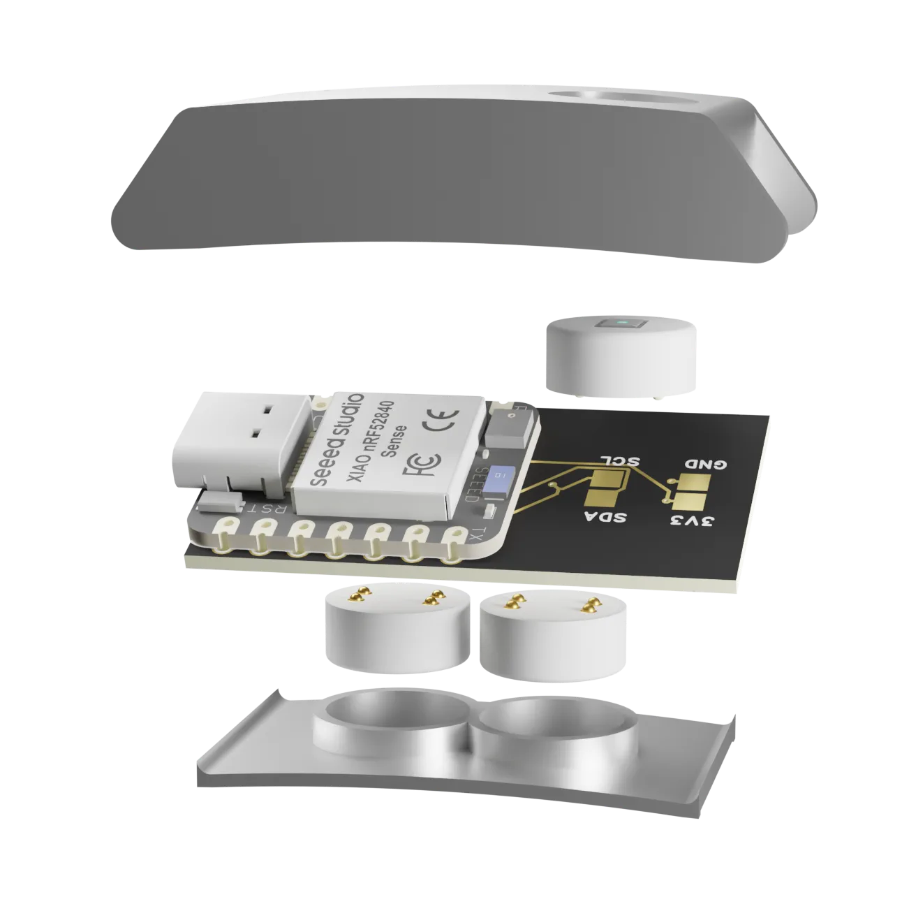
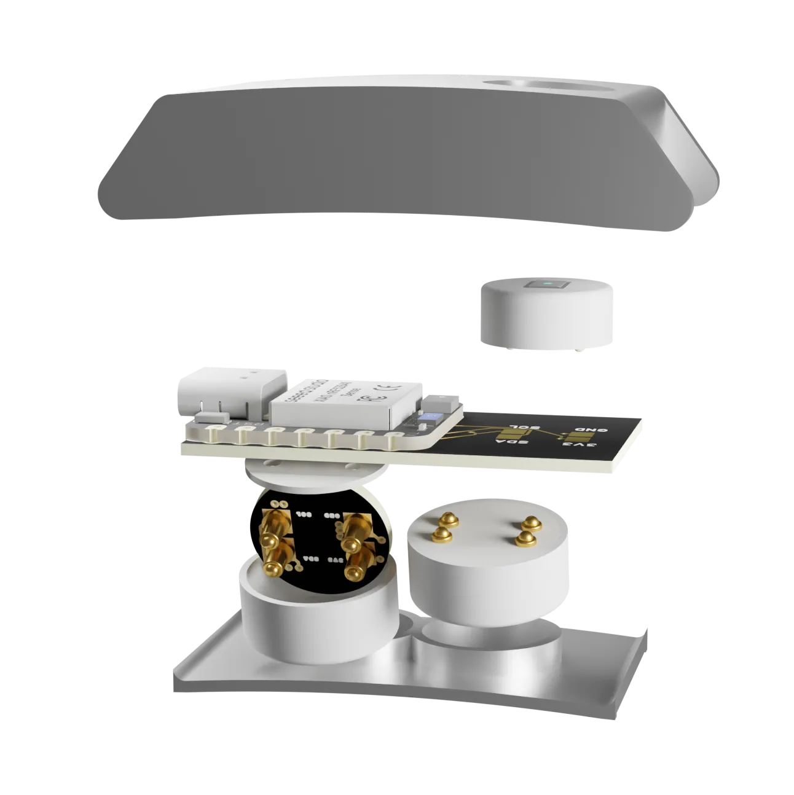

PPG module
Optical pulse sensing for heart rate, HRV, and SpO2-related research signals.
- For pilots
- recovery, exertion, safety context
- Chip
- MAXM86161
Hardware
OpenPulse combines two modules that touch the wrist for body signals with one module that faces outward for context like gas, heat, or humidity. The same band can become a research wearable, safety monitor, or wellness pilot device.

Architecture at a glance
The main PCB handles power, BLE, compute, and the sensor bus. The round modules define what the band measures: two collect wrist-contact body signals, while one looks outward at the surrounding environment.
Modularity is the product
For a layperson, this means a wearable that can be configured instead of replaced. For a technical partner, it means a repeatable hardware interface for new sensors, validation runs, and specialized signal stacks.

Sensor modules
Each round module is a small replaceable sensor board. First we explain what it measures and why a pilot might need it; then the chip-level detail is available for engineers.
Optical pulse sensing for heart rate, HRV, and SpO2-related research signals.
Skin conductance and impedance signals for stress, arousal, and response studies.
High-resolution temperature tracking as context for recovery, environment, and safety.
Movement, posture, and activity context that helps interpret physiological signals.
Acoustic context for controlled pilots where sound events matter to the measurement setup.
Sensing that faces away from the wrist for gas, humidity, temperature, or other workplace context.
Full specs
OpenPulse should never bury the product in jargon. But serious pilot partners need to see that the architecture has real engineering decisions behind it.
Open software architecture
Raw sensor channels from module-specific drivers.
EDA, PPG, temperature, motion, and environment processing blocks.
Use-case-aware signal combinations, not one uniform algorithm for all.
Configurable recipes for pilots and repeatable studies.
MQTT, dashboards, exports, app integrations, or local alerts.
Data sovereignty
OpenPulse is designed for local processing, open APIs, exportable data, and pilots where the partner can understand what is measured and how the signal is transformed.
Talk to us